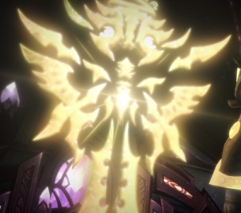
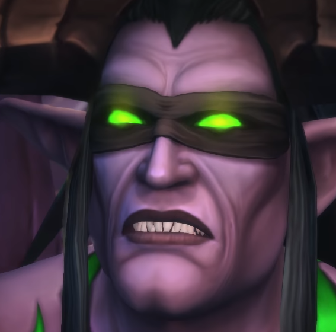

Диалог между Зе'Рой и Иллиданом Яростью Бури
(c участием Верховного экзарха Туралиона)
Т:Мы так рады вновь предстать перед тобой, Зе'Ра...
З:Туралион... Вы нашли избранного...
*Туралин отходит, выходит Иллидан*
З:Иллидан, с самого рождения свет твоих глаз дарил всем надежду
*Иллидан вспоминает как отдал глаза за силу демона*
И:Я отказался от него очень давно...
З:Разве ты не хочешь врнуть утраченное и исцелиться?
И:Гибель Легиона меня исцелит...
З:Дитя... Ты отдал многое но обрёл так мало... Раскрой свои возможности, искупи вину, сбрось оковы тьмы и прими силу Света
И:Я уже платил свободой за силу.
З:Пророчество должно исполниться!
*Зе'Ра заковывет Иллидана путами из света*
З:Ты переродишься!
Свет дарует тебе новую жизнь!
И:Это решать не тебе!
З:Свет исцелит твои шрамы!
И:ОНИ ЧАСТЬ МЕНЯ!
З:Путь Света твоя судьба!
И:МОЯ СУДЬБА В МОИХ РУКАХ!
*Иллидан уничтожает Зе'Ру*
Т:ТЫ ПОГУБИЛ НАС, ПРЕДАТЕЛЬ!
И:Лишь вашу слепую веру...Нет никакого "Избранного"... Только мы и наши враги...